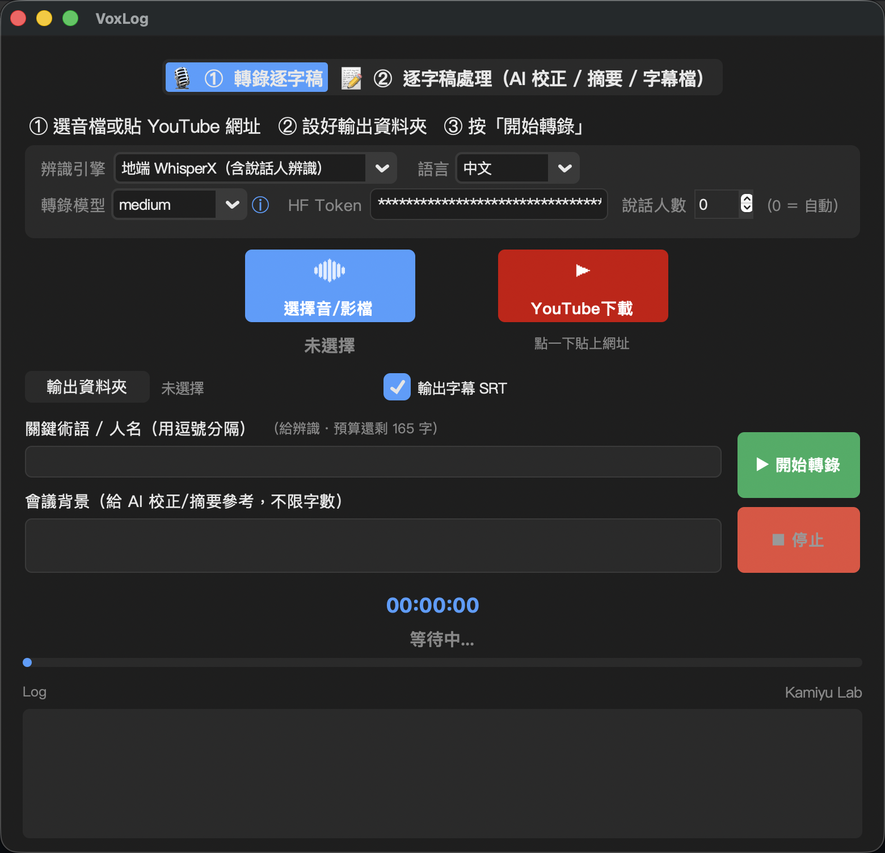

丟一段錄音、一支影片、或一條 YouTube 網址進去，VoxLog 會自動聽寫成逐字稿，再用 AI 幫你整理成一份可以直接交出去的會議紀錄（Word 檔）。

錄音檔、影片檔都吃，也可以直接貼 YouTube 網址。
標出「誰說了哪一句」（完整版功能）。
自動修錯字、抓重點與待辦，輸出成 Word 檔。
順手切成 SRT 字幕，影片可以直接用。
拿不定主意就選輕量版。之後想要「分人」功能，回來雙擊完整版的安裝檔就會原地升級，東西不用重來。
☝️先選上面兩題，這裡就會出現你這台電腦專屬的步驟。
到 Python 官網下載安裝，安裝畫面最下面那個「Add python.exe to PATH」一定要打勾，再按 Install Now。
請裝 3.11 或 3.12 版。忘記打勾的話，重新執行一次安裝檔選 Modify 就能補勾。
按下面的按鈕會開啟 Google 雲端硬碟，點右上角的下載圖示存下 VoxLog.zip，再解壓縮成一個 VoxLog 資料夾。
Windows 解壓縮：對 zip 按右鍵 →「解壓縮全部」。解出來如果多一個 __MACOSX 資料夾，那是壓縮時附帶的，忽略或刪掉都行，要打開的是 VoxLog 那個。
打開 VoxLog 資料夾，雙擊 ，然後就放著讓它跑。
整個過程會一直印字，大約 5～15 分鐘大約 15～40 分鐘（要下載好幾 GB，網路慢會更久）。看到「安裝完成」再關掉視窗。
以後每次要用，就雙擊資料夾裡的 。
習慣用終端機的話，打 voxlog 也能啟動。
第一次打開，在畫面上選一個 AI 引擎（Claude／Gemini／ChatGPT），把你的 API 金鑰貼進去，按「驗證」，通過後就會自動存起來，下次不用再貼。
只做逐字稿、不需要 AI 整理的話，這步可以先跳過。
這個功能用的模型要求先註冊同意，三步：
git 抓不想經過雲端硬碟的話，直接 clone 也可以，內容一樣：
git clone https://github.com/Kamiyu94/VoxLog.git
抓下來之後，一樣雙擊 安裝。
brew upgrade 可能要重跑一次安裝檔。